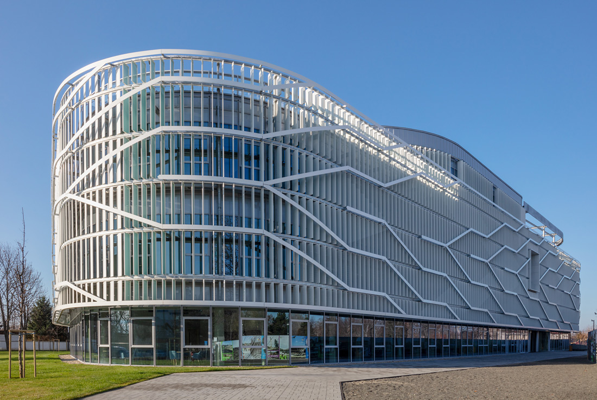

CV | VIA | CONTACT |
Kecskemét, the “Town of the Golden Sand” is located in the central part of Hungary and can be found 86 km southeast from the capital of Hungary, Budapest. The city has a county status, and it is the seat of Bács-Kiskun megye (county). It is the 8th biggest city of Hungary and has a central role in the region.
You will find a wide range of programmes, art and cultural events, and traditional programmes all the year round in Kecskemét. This variety is our heritage from the past, since the ‘Town of the Golden Sand’ has been the meeting point of merchants, different religions and cultures for centuries.
Kecskemét lies in the middle of Hungary, in the region of the sand dunes between Danube and Tisza Rivers. The settlement was established at the cross-roads of ancient trading routes, and its location and favourable geographical characteristics brought the town into the limelight from among the neighbouring villages.
The history of Kecskemét dates back to the 9th century and the charter of 1368 by King Louis the Great mentions it as a market-town. It preserved its market-town character for centuries, and the extensive farming, the trade of cattle, and later on the special vine- and fruit-growing culture resulted in the growth of the town. The results of the plant breeders’ work are the famous apricot of Kecskemét, as well as the ‘whistling’ apricot brandy of unique taste.
In the second half of the 19th century the immense development of the town made it possible for the market-place of the former market-town to be transformed into a splendid main square with buildings constructed in the style of Art Nouveau. Kecskemét is still the ‘capital’ of the Hungarian Art Nouveau architecture: the central area boasts with the most splendid masterpieces of this style (the Town Hall, the Ornamented Palace, and the Youth Centre). The characteristic feature of the Main Square is the presence of churches of different denominations.
Kecskemét has been the seat of Bács-Kiskun County since 1950. It has got more than 110 thousand inhabitants, and it is a dynamically developing industrial, commercial and cultural centre. The town hosts workshops and unique collections of music, fine arts and animations of international fame, and recognised scientific institutions. In addition to these events, Kecskemét welcomes visitors with a whole range of recurring programmes year by year, of which the most outstanding events are the Kecskemét Spring Festival, the Kodály Music Festival, the Kecskemét Wine and Palinka Festival, the Future of Europe International Children Meeting Festival, and the ‘Famous Week’ Festival.